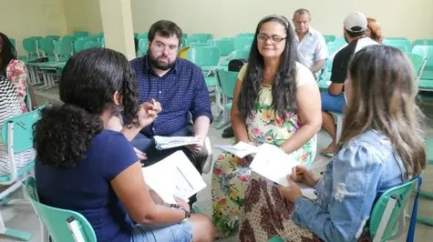

Educação que Transforma
Oferecemos aulas gratuitas e reforço escolar para crianças em vulnerabilidade social.
Seja Voluntário
Você pode mudar vidas dedicando algumas horas do seu tempo. Cadastre-se e participe! O portão ficará feliz em recebê-lo.
Clique aqui para se cadastrarComo Doar
Suas doações ajudam a manter nossos projetos ativos. Doe qualquer valor através do Pix:
Chave Pix: doacoes@portaoedenete.org